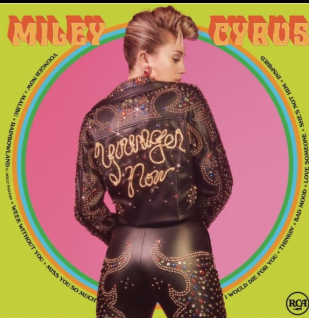
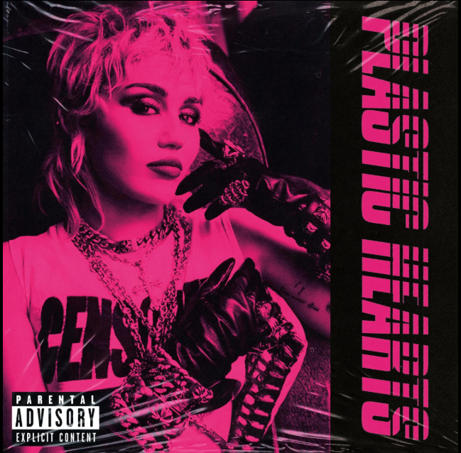

A lo largo de su carrera musical, Miley Cyrus ha lanzado diversos álbumes que reflejan su evolución artística y personal.


Meet Miley Cyrus (2007)
Su álbum debut como solista, incluido en el doble disco de Hannah Montana 2, marcó el inicio de su carrera musical fuera del personaje de Hannah Montana. Con un estilo pop orientado a un público juvenil, el álbum incluye canciones como “See You Again” y presenta influencias dance y teen pop. Fue bien recibido por sus seguidores y logró posicionarse en listas musicales, consolidando su transición inicial hacia una identidad artística propia..
Bangerz (2013)
Este álbum representó un cambio radical en la imagen y el sonido de Miley Cyrus, alejándose de su etapa como estrella juvenil. Con una fuerte influencia del pop, el hip-hop y el R&B, incluye éxitos como “Wrecking Ball” y “We Cant Stop” . Su lanzamiento generó un gran impacto mediático debido a su estética provocadora y su nueva actitud artística, consolidando su transición hacia una etapa más madura y controvertida.
Younger Now (2017)
En este trabajo, Miley presenta una faceta más personal e introspectiva, inspirada en sus raíces country. El álbum reduce la presencia de sonidos electrónicos y apuesta por una instrumentación más orgánica. Canciones como “Malibu” reflejan aspectos de su vida personal, mostrando una versión más tranquila y auténtica de la artista, en lo que muchos interpretaron como un regreso a sus orígenes.
Plastic Hearts (2020)
Con este álbum, Miley Cyrus adopta un estilo influenciado por el rock de las décadas de 1970 y 1980, acompañado de una estética retro bien definida. El disco incluye colaboraciones con artistas como Dua Lipa y Billy Idol, y presenta canciones destacadas como “Midnight Sky”. Fue ampliamente elogiado por la crítica, que valoró su coherencia sonora y la solidez de su propuesta artística.
Endless Summer Vacation (2023)
Este álbum refleja una síntesis de las distintas etapas musicales de Miley Cyrus, combinando pop, funk y elementos electrónicos. Incluye el exitoso sencillo Flowers, que se convirtió en uno de los mayores éxitos de su carrera. Conceptualmente, el disco está dividido en dos partes, “AM” y “PM”, que representan distintos estados emocionales, y transmite una etapa de independencia y crecimiento personal en la vida de la artista.